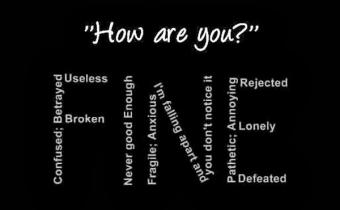
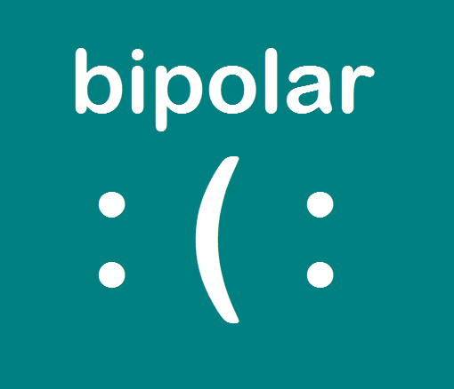

Mood disorders cause changes in one’s emotional state, leading to problems in their daily routine. If someone has a mood disorder, they could either have periods of intense sadness (depression), episodes of excitement and happiness (mania), or both. A few common mood disorders include:
Major Depressive Disorder
Major depressive disorder can cause prolonged periods of sadness. Depression affects the way people normally think, feel, and behave. During a depressive episode, one will feel a loss in enthusiasm, mood swings, or just general sadness. Things that used to be interesting won’t be as pleasurable as before. People will find trouble sleeping, and suicidal thoughts will start to enter. The length of an episode is always different, but usually goes on for a few months.
More signs of major depressive disorder include:
Persistent Depressive Disorder
Persistent depressive disorder (also known as dysthymia), involves long lasting periods of depression, though less severe. One with persistent depressive disorder will often get periods of mild depression, lasting for years. Although persistent depression disorder might not be as severe as major depression, it can still be serious. The symptoms can range from mild to severe.
Bipolar Disorder
Bipolar disorder is a mood disorder that causes mood swings, which affect one’s thoughts, energy, sleep, and behavior. The mood swings fall into two categories, highs (mania or hypomania) and lows (depression). When someone is in a period of depression, they feel extreme sadness, emptiness, and despair, similar to a major depressive disorder. During a manic episode, one gets an excessive amount of energy and activity. Hypomania is similar to mania, although less severe.
Symptoms of bipolar disorder include:
| Mania | Depression |
|---|---|
| Abnormally upbeat, excited, jumpy | Persistent feelings of sadness, despair, emptyness |
| Decreased need for sleep | Disturbed sleeping routine |
| Easily annoyed and distracted | Irritable |
| Poor judgement or decision making | Difficulty concentrating; indecisiveness |
| Racing thoughts and fast speech | Suicidal thoughts or attempts |
| Easily provoked; aggressive behavior | Loss/increase in appetite |
Sometimes, a manic episode might trigger psychotic symptoms, such as delusions and hallucinations.
There are several types of bipolar disorder:
Bipolar I includes severe mood swings from both mania and depression.
Bipolar II involves hypomanic episodes alternating with periods of severe depression.
Mixed Bipolar Episodes refers to a combination of depression and manic symptoms. Instead of alternating between depression and mania, a mixed episode involves experiencing both mania and depression symtoms in one episode.
Cyclothimic disorderis a disoder in which one experiences periods of hypomania or mild depression. A less severe form of bipolar.
Seasonal Affective Disorder
Seasonal affective disorder (SAD), is a type of depression affected by the change of seasons. Each period of depression starts and ends around the same time every year. Generally, the symptoms start to show during fall and winter, though some might experience moodiness in summer and spring instead. These symptoms usually start out mild, but become more severe as days progress.
The general symptoms include:
Some symptoms specific to depression in winter include:
These symptoms usually start out mild, but become more severe as days progress.